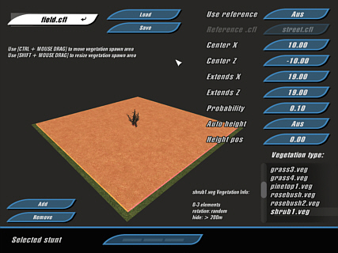

You
can quit VegetEdit by pressing Alt-F4. Don't forget to
save your vegetation settings before quitting.
You
can quit VegetEdit by pressing Alt-F4. Don't forget to
save your vegetation settings before quitting.Location: [crashday]\tools\vegetedit

The interface of VegetEdit
VegetEdit is a tool designed to set the amount and styles of vegetation on each track piece. For this purpose Crashday offers a range of predefined vegetation styles, where the designer only has to define the area in which a certain vegetation type may come up as well as how probable it is that something is set at all. The predefined vegetation presets (.veg-files) are for example different tree styles, bushes or grass bunches.
How does VegetEdit work
When starting VegetEdit, field.cfl is loaded by default. To load your own track piece you can either type its .cfl's name into the load dialog or, as you do with ShowCFL, open your .cfl-directly with VegetEdit. To the lower right on the screen you will find a list of all vegetation presets available. Hitting the “Add” button creates a new vegetation instance. Change the style by selecting a different .veg-file from the list. The parameters of each style (e.g. density, probability, etc.) are displayed next to the list. A red box is displayed that indicates the area where it is possible that vegetation objects are appearing in-game (positions will be chosen randomly within the area). You can either shift/scale this box by pressing ”Ctrl”/“shift” + left mouse button and dragging or by typing the exact values into the corresponding input fields to the right.
If you don't want to specify a "Height Pos" (vertical Y position), you can activate "Auto Height" as well. This means that every vegetation object is set “on top” of the track piece, automatically adjusting to the shape of it. If “Auto Height” isn't suiting your needs, you can manually type in the position.
Another very useful feature is the “Reference Link” in the upper right corner of the screen. You can choose an existing track piece as reference for your current track piece vegetation. The whole vegetation settings from the reference tile are applied to the current tile. Changing the reference tile's vegetation will also change your current tile's vegetation, even without "touching" your current file anymore.
You
can quit VegetEdit by pressing Alt-F4. Don't forget to
save your vegetation settings before quitting.
Remember,
whenever you like to view the final result, just open your .cfl-file
in ShowCFL.